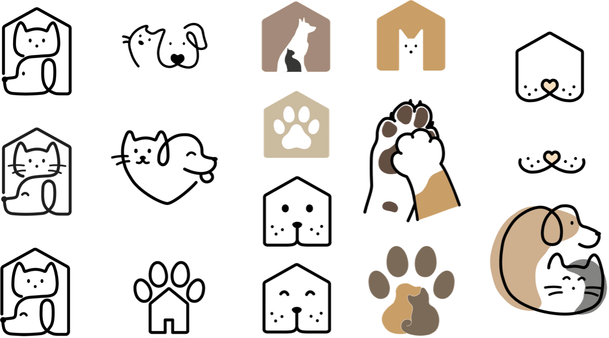
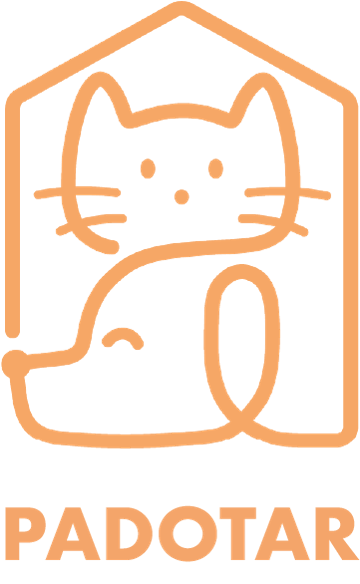
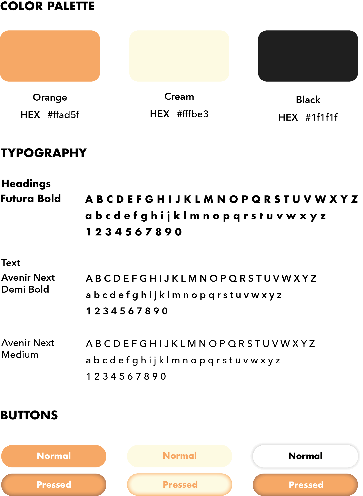

Branding
Branding
Now that i have refined the overall structure of the app, the
question now was - what will it look like? Before working on the UI,
I focused on creating Padotar's branding to effectively communicate
the brand personality through the app.
Logo Design
Given the importance of visual identity in the implementation of digital
products, I considered it pertinent to create a graphic brand. I tried,
above all, to maintain a simple and minimalist aesthetic to provide a
legible and visually impactful image.
Therefore, the first step was
to select the name of the fictitious shelter for which the application
was developed. Since it is a shelter for animals looking for a family
and the comfort of a home, I combined the words 'para' and 'adotar'.
These form the word 'padotar,' which, coincidentally, results in a sound
effect similar to their hurried pronunciation.
After selecting the name,
I began experimenting with the graphic brand, using the digital tool Adobe
Illustrator. As seen in the figure below, a brief study of colors was
carried out, always associated with neutral tones that refer to pet fur.
Above all, my goal was to maintain a simple and minimalist aesthetic,
ensuring a legible and visually impactful image.

Once the brand was defined, I introduced the typography, giving rise
to the logo.

Padotar's brand image is defined by a symbol depicting a dog and a
cat inside a shelter, representing the most common animals found in
these institutions. The logo, unmistakably corresponding to the shelter's
name, complements this symbol.
The main color, orange, was chosen for its contrast with other elements,
conveying the shelter's values of joy, trust, strength, and ambition.
To ensure consistency with the interface design, this color will be
integrated into various visual components.
The logo features a simple sans-serif font, Futura, in a bold style,
chosen to visually balance and emphasize the shelter's name.
Brand Guide
I focused on the essentials here, as it wasn't the main purpose of the project.

UI Kit
In order to enhance the user experience, I opted for a vibrant and
personality-filled color - orange. Complementing this, I chose a
pastel shade that represents an analogous color to orange, aiming
to evoke serenity and comfort. Black is applied to the text with
RGB values below 100% to avoid creating excessive contrast, which
could strain the vision of users spending extended periods in the app.
In selecting fonts, my goal was simplicity, with a focus on enhancing
readability for individuals with reduced vision, dyslexia, or cognitive
and neurological difficulties. To maintain visual coherence, I opted
for two sans-serif fonts: Futura, which was previously used in
the logo and is applied to the titles, and Avenir Next,
which is used for all other written content. This distinction aids
in differentiating headings from paragraphs of text.
